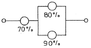
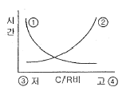
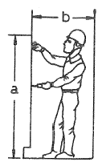

산업안전산업기사 (2006-08-06 기출문제)
1과목: 산업안전관리론
1. 산업안전보건법상의 직원의 신규 채용시 교육 내용이 아닌 것은?
- 산업안전보건법령에 관한 사항
- 근로자 건강증진 및 산업간호에 관한 사항
- 물질안전보건자료에 관한 사항
- 표준안전작업방법에 관한 사항
(정답률: 32%)

2. 맥그리거(McGregor)의 Y이론과 관계가 없는 것은?
- 직무확장
- 인간관계 관리방식
- 권위주의적 리더쉽
- 책임감과 창조력 있음
(정답률: 72%)
3. 스트레스(Stress)에 관한 설명으로 가장 옳은 것은?
- 스트레스 상황에 직면하는 기회가 많을수록 스트레스 발생 가능성은 낮아진다.
- 스트레스는 직무몰입과 생산성 감소의 직접적인 원인이 된다.
- 스트레스는 부정적인 측면만 가지고 있다.
- 스트레스는 나쁜 일에서만 발생한다.
(정답률: 81%)
4. 직속상사가 현장에서 업무상의 개별교육이나 지도훈련을 하는 교육의 형태는?
- ATT
- TWI
- O.J.T
- Off the J.T
(정답률: 71%)
5. 다음 중 피로의 종류에 속하지 않는 것은?
- 주관적 피로
- 객관적 피로
- 생리적 피로
- 환경적 피로
(정답률: 35%)
6. 인지(認知)과정에서 생길수 있는 착오의 원인이 아닌 것은?
- 심리적 능력한계
- 감각차단 현상
- 자기기술 과신
- 정보량의 저장한계
(정답률: 63%)
7. 도수율(Frequency Rate of Injury)이 10.0인 사업장에서 작업자가 평생동안 작업할 경우 발생할 수 있는 재해의 건수는? (단, 평생의 총근로시간수는 120,000시간으로 한다.)
- 1.0 건
- 1.2 건
- 2.4 건
- 12.0 건
(정답률: 59%)
8. Lewin.K의 B=f(PㆍE)이론 대한 설명으로 옳은 것은?
- B : 인간행동
- f : 인간관계, 작업환경
- P : 인간의 행동
- E : 심신상태, 성격, 지능, 연령
(정답률: 56%)
9. 무재해 운동의 이념 3원칙에 해당되는 것은?
- 팀활동의 원칙
- 포상의 원칙
- 참가의 원칙
- 예방의 원칙
(정답률: 68%)
10. 안전표지에서 주의, 위험표지의 글자, 보조색으로 이용되는 색채는?
- 보라색
- 빨강색
- 검정색
- 흰색
(정답률: 64%)
11. 조건반사설에 의거한 학습이론의 원리가 아닌 것은?
- 강도의 원리
- 일관성의 원리
- 계속성의 원리
- 시행착오의 원리
(정답률: 56%)
12. 의사결정 과정에 따른 리더쉽의 유형 중에서 민주형에 속하는 것은?
- 집단 구성원에게 자유를 준다.
- 지도자가 모든 정책을 결정한다.
- 집단토론이나 집단결정을 통해서 정책을 결정한다.
- 명목적인 리더의 자리를 지키고 부하직원들의 의견에 따른다.
(정답률: 71%)
13. 다음 중 안전보호구가 아닌 것은?
- 안전화
- 안전장갑
- 보안경
- 안전대
(정답률: 36%)
14. 사업장에서 시행되는 교육훈련의 직접 목적으로 볼 수 없는 것은?(오류 신고가 접수된 문제입니다. 반드시 정답과 해설을 확인하시기 바랍니다.)
- 인재 육성
- 인간 완성
- 능률 향상
- 기업의 유지, 발전
(정답률: 54%)
15. 안전관리 조직의 유형 중 참모식 조직의 특성이 아닌 것은?
- 모든 명령은 생산계통을 따라 이루어진다.
- 100명 이상의 사업장에 적합하다.
- 안전업무가 전담기능에 의하여 수행되므로 발전적이다.
- 라인식 조직보다 비경제적인 조직이며 안전기술 축적이 용이하다.
(정답률: 53%)
16. 방진마스크의 구비 조건으로 틀린 것은?(오류 신고가 접수된 문제입니다. 반드시 정답과 해설을 확인하시기 바랍니다.)
- 흡배기 저항이 높을 것
- 중량이 가벼울 것
- 안면 밀착성이 좋을 것
- 포집 효율이 좋을 것
(정답률: 69%)
17. 다음 중 재해의 뜻으로 가장 옳은 것은?
- 생명과 재산을 보호하기 위한 제반활동을 말한다.
- 안전사고의 결과로 일어난 인명과 재산의 손실을 말한다.
- 안전사고의 사건 그 자체를 말한다.
- 사고로 입은 인명의 상해만을 말한다.
(정답률: 82%)
18. 하인리히의 1:29:300의 원칙에서 관리해야 할 사항을 가장 적합하게 설명한 것은?
- 총 재해 330건에 치중해야 한다.
- 29건의 경상의 재해를 제거해야 한다.
- 1건의 사망재해의 원인 제거에 치중해야 한다.
- 300건의 무상해 재해의 원인 제거에 치중해야 한다.
(정답률: 51%)
19. 안전동기를 유발시킬 수 있는 방법과 거리가 먼 것은?
- 경쟁과 협동심을 유발시킨다.
- 안전목표를 명확히 설정한다.
- 포상 조건만을 강조한다.
- 동기유발의 최적수준을 유지토록 한다.
(정답률: 83%)
20. 재해조사 및 통계분석시 사고의 유형, 기인물 등의 분류 항목을 큰 값에서 작은 값의 순서로 도표화한 것은?
- 파레토(pareto)도
- 클로즈(close)도
- 관리도
- 특성요인도
(정답률: 74%)
2과목: 인간공학 및 시스템안전공학
21. 인간과 기계체계의 시스템의 다음과 같이 연결되었을 때 신뢰도는?

- 59.5%
- 68.6%
- 71.2%
- 98.4%
(정답률: 60%)
22. 다음 시스템 안전해석 방법 중 틀린 것은?
- THERP : 정량적 해석방법
- ETA : 귀납적, 정량적 해석방법
- PHA : 정성적 해석방법
- FMEA : 연역적, 정량적 해석방법
(정답률: 40%)
23. 다음 그린은 통제비와 시간과의 관계를 나타낸 그림이다. ①~④에 들어갈 내용으로 이루어진 것은?

- ①조정시간 ②이동시간 ③민감 ④둔감
- ①조정시간 ②이동시간 ③둔감 ④민감
- ①이동시간 ② 조정시간③민감 ④ 둔감
- ①이동시간 ② 조정시간③둔감 ④ 민감
(정답률: 52%)
24. 4m 거리에서 조도가 60 lux 였다면 2m 에서는 조도가 얼마인가?
- 150 lux
- 240 lux
- 320 lux
- 480 lux
(정답률: 74%)
25. 인간은 계속되는 소음에 장시간 노출되는 경우 청력을 손실하며 소음의 강도와 노출 허용시간은 반비례하는 것이 일반적이다. “소음작업”이라 함은 1일 8시간 작업을 기준으로 몇 dB 이상의 소음이 발생하는 작업인가?
- 75dB
- 80dB
- 85dB
- 90dB
(정답률: 50%)
26. 정량적인 동적 표시장치에 해당되지 않는 것은?
- 정목동침형
- 정침동목형
- 계수형
- 상태표시기
(정답률: 57%)
27. 맨-머신 시스템(Man-machine system)에서 인간과 기계에 록 시스템(Lock system)을 설치할 때 다음 설명 중 옳은 것은?
- 기계에 인트라록 시스템(intra lock system)을 둔다.
- 인터록 시스템(inter lock system))과 인트라록 시스템(Intra lock system) 중간에 트랜스록 시스템(Trans lock system)을 둔다.
- 트랜스록 시스템(Trans lock system)과 인터록 시스템(Inter lock system) 중간에 인트라록 시스템Intra lock system)을 둔다.
- 트랜스록 시스템(Trans lock system)과 인트라록 시스템Intra lock system) 중간에 인터록 시스템(Inter lock system)을 둔다.
(정답률: 48%)
28. 선 작업 자세로서 수리 작업을 하는 작업역에 대한 내용 중 옳은 것은?

- a = 160 cm, b = 65 cm
- a = 170 cm, b = 70 cm
- a = 180 cm, b = 75 cm
- a = 190 cm, b = 80 cm
(정답률: 50%)
29. 예비위험분석(PHA)의 설명으로 옳은 것은?
- 시스템안전 위험분석을 수행하기 위한 예비적인 최초의 작업으로 위험요소가 얼마나 위험한지를 평가
- 손실과 인명의 사상에 연결되는 높은 위험도를 가진 요소나 고장의 형태에 따른 분석법
- 각 서브 시스템 및 전 시스템의 안전성에 악영향을 끼치지 않게 하기 위한 분석기법
- 관리, 설계, 생산, 보존 등에 대해서 광범위하게 안전성을 확보하기 위한 기법
(정답률: 75%)
30. 구성, 숫자, 영문자, 기하학적 형상 중에서 암호로서의 성능이 가장 좋은 것부터 배열한 것은?
- 기하학적 형상 - 숫자 - 구성 - 영문자
- 구성 - 기하학적 형상 - 영문자 - 숫자
- 영문자기- 구성 - 숫자 - 기하학적 형상
- 숫자 - 영문자 - 기하학적 형상 -구성
(정답률: 65%)
31. 인간이 기계를 조종하며 임무를 수행하여야 하는 인간-기계체계가 있다. 만일 인간-기계 통합체계의 신뢰도가 0.8 이상이어야 하며, 인간의 신뢰도는 0.9 라 한다면, 기계의 신뢰도는 얼마 이상이어야 하는가?
- 0.57
- 0.62
- 0.73
- 0.89
(정답률: 42%)
32. 인간의 실수 중 개인능력에 속하지 않는 것은?
- 긴장수준
- 피로상태
- 교육훈련
- 자질
(정답률: 32%)
33. 표시장치를 배치할 때의 기본요인이 아닌 것은?
- 보편성
- 가시성(可視性)
- 관련성
- 그룹(group)편성
(정답률: 26%)
34. 운전자의 조종에 의해 운용되며 융통성이 없는 시스템 형태는 무엇인가?
- 수동 체계
- 기계화 체계
- 자동 체계
- 시스템 체계
(정답률: 42%)
35. 인간의 시각특성을 설명한 것으로 옳은 것은?
- 적응은 두 눈을 물체에 수련하는 것을 말한다.
- 시야는 수정체의 두께 조절로 이루어진다.
- 망막은 카메라의 렌즈에 해당된다.
- 암조응에 걸리는 시간은 명조응보다 길다.
(정답률: 48%)
36. 작업장 내부의 추천반사율이 가장 낮아야 하는 곳은?
- 바닥
- 천장
- 가구
- 벽
(정답률: 70%)
37. 조도에 관한 설명 중 틀린 것은?
- 조도란 어떤 물체나 표면에 도달하는 광의 밀도를 말한다.
- 1 [fc] 란 1촉광의 점광원으로부터 1 foot 떨어진 곡면에 비추는 광의 밀도를 말한다.
- 1 [lux] 란 1촉광의 점광원으로부터 1m 떨어진 곡면에 비추는 광의 밀도를 말한다.
- 조도는 광도에 비례하고 거리에 반비례한다.
(정답률: 54%)
38. 신체부위의 동작에 대한 설명 중 굴곡과 반대 방향의 동작으로 신체 부위간의 각도가 증가하는 관절동작은?
- 내전
- 회전
- 신전
- 외전
(정답률: 46%)
39. 고장의 발생상황 중 불량제조, 생산과정에서의 품질관리 미비, 설계미숙 등으로 일어나는 고장은?
- 마모고장
- 우발고장
- 초기고장
- 품질관리고장
(정답률: 61%)
40. 역치(threshold value)의 설명으로 가장 적절한 것은?
- 역치는 감각에 필요한 최소량의 에너지를 말한다.
- 에너지의 양이 증가할수록 차이역치는 감소한다.
- 표시장치를 설계할 때는 신호의 강도를 역치 이하로 설계하여야 한다.
- 표시장치의 설계와 역치는 아무런 관계가 없다.
(정답률: 45%)
3과목: 기계위험방지기술
41. 승강기의 안전장치가 아닌 것은?
- 과부하방지장치
- 이탈방지장치
- 리미트스위치
- 비상정지장치
(정답률: 30%)
42. 기계운동 형태에 따른 위험전 분류에 해당되지 않는 것은?
- 끼임점
- 회전물림점
- 협착점
- 절단점
(정답률: 62%)
43. 양중기의 자체검사 사항이 아닌 것은?
- 브레이크 이상유무
- 달기기구 손상유무
- 달기체인 손상유무
- 접합상태 이상유무
(정답률: 52%)
44. 프레스의 금형에서 제품을 꺼낼 때, 칩을 제거하기 위하여 사용하는데 가장 안전한 것은?
- 브러시
- 걸레
- 장갑
- 공기분사장치
(정답률: 43%)
45. 페일 세이프(Fail safe) 구조의 기능면에서 설비 및 기계 장치의 일부가 고장이 난 경우 기능의 저하를 가져오더라도 전체 기능은 정지하지 않고 다음 정기점검시까지 운전이 가능한 방법은?
- Fail-passive
- Fail-soft
- Fail-active
- Fail-operational
(정답률: 55%)
46. 크레인 작업시의 준수사항 중 가장 거리가 먼 것은?
- 인양할 하물은 바닥에서 끌어 당기거나, 밀어 작업하지 아니할 것
- 유류드럼이나 가스통 등의 위험물 용기는 보관함에 담아 운반할 것
- 고정된 물체는 직접 분리, 제거하는 작업을 할 것
- 근로자의 출입을 통제하여 하물이 작업자의 머리 위로 통과하지 않게 할 것
(정답률: 74%)
47. 상부를 사용하는 탁상용 연삭기에 사용하는 덮개의 노출 각도는?
- 45°
- 60°
- 90°
- 120°
(정답률: 62%)
48. 로울러기의 급정지를 위한 방호장치를 설치하고자 한다. 앞면 로울러의 직경이 30cm, 분당 회전속도는 40rpm 이라면 어떤 성능의 급정지장치를 부책해야 하는가?
- 급정지 거리가 앞면 로울러 원주의 1/2
- 급정지 거리가 앞면 로울러 원주의 1/2.5
- 급정지 거리가 앞면 로울러 원주의 1/3
- 급정지 거리가 앞면 로울러 원주의 1/3.5
(정답률: 52%)
49. 로울러의 맞물림점 전방에 개구 간격 16.5mm의 가드를 설치하고자 한다면, 가드의 설치 위치는 맞물림점에서 최소한 얼마의 간격을 유지하여야 하는가?
- 60mm
- 70mm
- 80mm
- 90mm
(정답률: 45%)
50. 보일러에서 압력방출장치가 2개 이상 설치될 경우 최고 사용압력 이하에서 1개가 작동하고 다른 압력방출장치는 최고사용압력 몇 배 이하에서 작동되도록 부착하는가?
- 1.03
- 1.⑤
- 1.3
- 1.5
(정답률: 69%)
51. 목재가공용 기계톱의 방호장치가 아닌 것은?
- 덮개
- 반발예방장치
- 톱날접촉예방장치
- 과부하방지장치
(정답률: 60%)
52. 다음 중 기동 스위치를 활용한 안전장치는?
- 양수 조작식
- 게이트 가드식
- 광전자식
- 급정지 장치
(정답률: 43%)
53. 다음 중 방호울을 설치하여야 하는 공작 기계는?
- 플레이너
- 선반
- 밀링 머신
- 드릴링 머신
(정답률: 43%)
54. 선반 작업시 주의사항으로 틀린 것은?
- 돌리개는 적정 크기의 것을 선택하고, 심압대 스핀들은 가능하면 길게 나오도록 한다.
- 칩(chip)이 비산할 때는 보안경을 쓰고 방호판을 설치 사용한다.
- 공작물의 설치가 끝나면, 척에서 렌치류는 곧 제거한다.
- 작업중에 가공품을 직접 만지지 않는다.
(정답률: 77%)
55. 기계설비에서 푸울 프루우프(fool-proof) 개선의 경우가 아닌 것은?
- 기계의 회전부분에 울이나 커버를 붙인다.
- 선풍기의 가드에 손이 닿으면 날개의 회전이 멈춘다.
- 안전점검을 실시하고 미비점은 개선한다.
- 승강기에서 중량제한이 초과되면 움직이지 않는다.
(정답률: 50%)
56. 보일러의 제어장치가 아닌 것은?
- 압력 제한스위치
- 언로드 밸브
- 압력 방출장치
- 고ㆍ저수위 조절장치
(정답률: 55%)
57. 프레스의 감응식 방호장치에서 손이 광선을 차단한 직후부터 급정지장치가 작동을 개시한 시간이 0.03초이고, 급정지 장치가 작동을 시작하여 슬라이드가 정지한 때까지의 시간이 0.2초이라면 광축의 설치위치는 위험점에서 얼마 이상이어야 하는가?
- 153mm
- 279mm
- 368mm
- 451mm
(정답률: 49%)
58. 밀링 작업시 안전수칙으로 잘못된 것은?
- 절삭칩 제거에는 브러쉬를 사용한다.
- 테이블 뒤에 공구등을 올려 놓지 않는다.
- 칩의 비산이 많으므로 보안경을 착용한다.
- 절삭 중에는 손의 보호를 위하여 장갑을 착용한다.
(정답률: 76%)
59. 양중기에서 절단하중이 100 톤인 와이어로프를 사용하여 화물을 직접적으로 지지하는 경우, 화물의 최대허용하중으로 가장 적당한 것은?
- 20 톤
- 30 톤
- 40 톤
- 50 톤
(정답률: 58%)
60. 순간풍속이 몇 m/s 를 초과하는 바람이 불어 올 우려가 있을 때, 옥외에 설치되어 있는 승강기에 대하여 받침수를 증가하는 등의 도괴를 방지하기 위한 조치를 해야 하는가?
- 25
- 30
- 35
- 40
(정답률: 37%)
4과목: 전기 및 화학설비위험방지기술
61. 화학공정에서 반응을 시키기 위한 조작 조건에 해당되지 않는 것은?
- 반응 온도
- 반응 농도
- 반응 높이
- 반응 압력
(정답률: 70%)
62. 정전기의 방전형태에 해당하지 않는 것은?
- 브러쉬(brush)방전
- 적외선(infrared-ray)방전
- 코로나(corona)방전
- 연면(surface)방전
(정답률: 46%)
63. 건조설비의 사용상 주의점이 아닌 것은?
- 건조설비 가까이 가연성 물질을 두지 말 것
- 고온으로 가열 건조한 물질은 즉시 격리 저장할 것
- 위험물 건조설비를 사용할 때는 미리 내부를 청소하거나 환기시킨 후 사용할 것
- 건조로 인해 발생하는 가스ㆍ증기 또는 분진에 의한 화재ㆍ폭발의 위험이 있는 물질은 안전한 장소로 배출할 것
(정답률: 72%)
64. 공기 중에 3ppm 의 디메틸아민(demethylamine, TLV-TWA : 10ppm)과 20ppm 의 시클로헥산올(cyclohexanol, TLV-TWA : 50ppm)이 있고, 10ppm의 산화프로필렌(propyleneoxide, TLV-TWA : 20ppm)이 존재한다면 혼합 TLV-TWA는 얼마인가?
- 12.5ppm
- 22.5ppm
- 27.5ppm
- 32.5ppm
(정답률: 42%)
65. 제4류 위험물(인화성 액체)의 공통성질 중 틀린 것은?
- 증기는 공기보다 무겁다.
- 대부분 물보다 가볍고 물에 잘 녹는다.
- 착화온도가 낮은 것은 위험하다.
- 증기는 공기와 혼합하여 연소한다.
(정답률: 59%)
66. 다음 중 폭발의 위험성이 가장 높은 것은?
- 폭발 상한농도
- 완전연소 조성농도
- 폭발 상한성과 하한선의 중간점 농도
- 폭굉 상한성과 하한선의 중간점 농도
(정답률: 45%)
67. 전로의 사용전압이 400V 이상인 저압 전로의 절연저항값은 몇 MΩ 이상이어야 하는가?
- 0.1
- 0.2
- 0.3
- 0.4
(정답률: 60%)
68. 화학설비에서 단위공정시설 및 설비로부터 다른 단위공정시설 및 설비 사이의 적당한 안전거리는 설비의 외면으로 부터 몇 m 이상 유지되도록 하여야 하는가?
- 3
- 5
- 8
- 10
(정답률: 38%)
69. 누전경보기의 구성요소가 아닌 것은?
- 변류기
- 단로기
- 수신기
- 차단기구
(정답률: 42%)
70. 위험물질 중에서 급격한 반응으로 고열과 부피 팽창을 수반하는 물질은?
- 폭발물
- 인화물
- 발화물
- 기화물
(정답률: 61%)
71. 방폭지역으로 구분하는 것에 대한 내용으로 틀린 것은?
- 인화성 액체의 증기 또는 가연성 가스가 쉽게 존재할 가능성이 있는 지역
- 인화점이 40℃ 이하의 액체가 저장ㆍ취급되고 있는 지역
- 인화점이 40℃를 넘는 액체가 인화점 이상으로 저장ㆍ취급되고 있는 지역
- 인화점 150℃를 초과하는 액체가 인화점 이상으로 사용되고 있는 설비의 외부 지역
(정답률: 42%)
72. 가연성 가스의 연소 범위에 대한 설명으로 옳은 것은?
- 착화온도의 상한과 하한범위
- 연소할 수 있는 최저온도
- 인화온도의 상한과 하한범위
- 연소할 수 있는 혼합가스의 농도범위
(정답률: 45%)
73. 분진폭발의 발생 순서로 옳은 것은?
- 퇴적분진 - 비산 - 분산 - 발화원발생 - 폭발
- 퇴적분진 - 발화원발생 - 분산 - 비산 - 폭발
- 퇴적분진 - 분산 - 비산 - 발화원발생 - 폭발
- 비산 - 퇴적분진 - 분산 - 발화원발생 - 폭발
(정답률: 56%)
74. 페인트를 스프레이로 뿌려 도장작업을 하는 작업 중 발생 하는 정전기 대전으로 이루어진 것은?
- 충돌대전, 유동대전
- 마찰대전, 유동대전
- 충돌대전, 분출대전
- 유동대전, 분출대전
(정답률: 70%)
75. 금속물질 화재의 소화방법으로 가장 부적절한 것은?
- 포말소화
- 탄산가스
- 물
- 건조사
(정답률: 47%)
76. 정전기로 인한 재해의 방지대책으로 틀린 것은?
- 접지
- 보호구의 착용
- 배관내 액체의 유속 증가
- 습도가 일정 이상이 되도록 유지
(정답률: 70%)
77. 다음의 위험 장소 중 1종으로 구분할 수 없는 것은?
- 통상의 상태에서 위험 분위기가 쉽게 생성되는 곳
- 유지, 보수 또는 누설에 의하여 자주 위험 분위기가 생성되는 곳
- 정상 가동 상태에서 폭발성 가스가 가끔 누출되는 곳
- 조작상의 실수, 오동작에 의하여 폭발성 가스가 누출 되거나 체류할 수 있는 곳
(정답률: 30%)
78. 다음 방폭구조 중 전폐형 구조로 된 것이 아닌 것은?
- 내압 방폭구조
- 유입 방폭구조
- 압력 방폭구조
- 안전증 방폭구조
(정답률: 49%)
79. 폭발범위에 있는 가연성 가스 혼합물에 전압을 변화시키며 전기 불꽃을 주었더니 1,000V 가 되는 순간 폭발이 일어났다. 이때 사용한 전기불꽃의 콘덴서 용량은 0.1μF 를 사용하였다면 이 가스에 최소발화에너지는 얼마인가?
- 5mJ
- 10mJ
- 50mJ
- 100mJ
(정답률: 47%)
80. 전기화재를 발화원으로 분류한 출화형태가 아닌 것은?
- 감전에 의한 출화
- 전기배선 또는 전기기기로부터의 출화
- 정전기 불꽃에 의한 출화
- 누전에 의한 출화
(정답률: 48%)
5과목: 건설안전기술
81. 다음 굴착기계 중 주행기면 보다 하방의 굴착에 적합하지 않은 것은?
- 백호
- 크램쉘
- 파워셔블
- 드래그라인
(정답률: 57%)
82. 흙막이지보공의 조립도에 명시되어야 할 사항이 아닌 것은?
- 부재의 배치
- 부대의 치수
- 버팀대 긴압의 정도
- 설치 방법과 순서
(정답률: 56%)
83. 두께가 25cm인 철근콘크리트 슬라브에서 거푸집동바리 설치 간격이 1m×1m인 경우 거푸집동바리 1본이 받는 연직방향 총 하중은? (단, 콘크리트의 단위중량 = 2.4ton/m3)
- 600kg
- 750kg
- 900kg
- 1⑤0kg
(정답률: 22%)
84. 다음은 굴착면의 기울기 기준을 틀린 것은?(2021년 11월 19일 개정된 규정 적용됨)
- 풍화암 - 1 : 1.0
- 연암 - 1 : 1.0
- 경암 - 1 : 0.3
- 보통흙 건지 - 1 : 0.5 ~ 1: 1
(정답률: 66%)
85. 유해위험 방지계획서 작성 대상의 기준으로 옳지 않은 것은?
- 지상높이 31m 이상인 건축물 공사
- 저수용량 1천만톤 이상인 용수 전용댐
- 최대지간길이 50m 이상인 교량공사
- 굴착깊이 10m 이상인 굴착공사
(정답률: 68%)
86. 사다리식 통로 구조에 대한 설명으로 틀린 것은?
- 발판의 간격은 동일 하게 할 것
- 발판과 벽과의 사이는 적당한 간격을 유지할 것
- 사다리의 상단은 걸쳐놓은 지점으로부터 60cm 이상 올라가도록 할 것
- 갱내 사다리식 통로의 길이가 10m 이상인 때에는 7m 이내마다 계단참을 설치할 것
(정답률: 67%)
87. 다음 중 크레인에 부착하는 방호장치에 속하지 않는 것은?
- 전격방지 장치
- 과부하방지 장치
- 권과방지 장치
- 브레이크 장치
(정답률: 58%)
88. 콘크리트 측압에 관한 설명 중 틀린 것은?
- 슬럼프가 클수록 측압은 커진다.
- 벽 두께가 두꺼울수록 측압은 커진다.
- 부어 넣는 속도가 빠를수록 측압은 커진다.
- 대기 온도가 높을수록 측압은 커진다.
(정답률: 60%)
89. 다음 중 비계가 갖추어야 할 요소가 가장 거리가 먼 것은?
- 안전성
- 작업성
- 경제성
- 영구성
(정답률: 65%)
90. 추락배해방지를 위한 안전방망(Net)의 그물코는 가로, 게로가 최대 몇 cm 이하여야 하는가?
- 5cm
- 7cm
- 10cm
- 15cm
(정답률: 62%)
91. 사업주는 계단 및 계단참을 설치할 때에는 매 m2당 몇 kg 이상의 하중에 견딜수 있는 강도를 가진 구조로 설치하여야 하는가?
- 200kg
- 300kg
- 400kg
- 500kg
(정답률: 43%)
92. 다음 중 항타기, 항발기의 권상용 와이어로프로 사용 가능한 것은?
- 이음매가 있는 것
- 와이어로프의 한 가닥에서 소선의 수가 5% 절단된 것
- 지름의 감소가 호칭지름의 8% 인 것
- 심하게 변형 또는 부식 등이 있는 것
(정답률: 57%)
93. 철골공사 등의 용접작업시 사용되는 가스용기의 취급상 주의사항으로서 잘못된 것은?
- 용기는 통풍 또는 환기가 잘되는 장소에 보관한다.
- 용기의 온도는 40℃ 이하로 유지한다.
- 밸브의 개폐는 가능한 빠르고 신속히 하여야 한다.
- 용해 아세틸렌 용기는 세워서 보관한다.
(정답률: 62%)
94. 작업장소 전체에 비계를 설치하기에는 비경제적이고, 주로 일시적인 작업을 할 때 가장 적당한 비계는?
- 이동식비계
- 강관비계
- 강관틀비계
- 달대비계
(정답률: 52%)
95. 다음 중 사면붕괴와 가장 관계가 먼 것은?
- 사면이 위치한 고도
- 사면의 기울기
- 사면의 높이
- 흙의 내부마찰각
(정답률: 43%)
96. 발파작업시 안전담당자의 유해ㆍ위험방지업무가 아닌 것은?
- 대피장소 및 경로를 지시한다.
- 근로자가 대피한 것을 확인한다.
- 적당한 시기를 선택하여 직접 점화한다.
- 발파후 불발장약을 점검한다.
(정답률: 67%)
97. 핸드 브레이커 취급시 안전기준과 거리가 먼 것은?
- 현장 정리가 잘되어 있어야 한다.
- 작업 자세는 항상 하향 45° 방향으로 유지하여야 한다.
- 작업전 기계에 대한 점검을 한다.
- 호스가 교차 되거나 꼬여 있는 가를 점검하여야 한다.
(정답률: 74%)
98. 거푸집 해체시 이행해야 할 안전수칙으로 틀린 것은?
- 거푸집 해체는 순서에 입각하여 실시한다.
- 상하에서 동시작업을 할 때는 상하의 작업자가 긴밀하게 연락을 취해야 한다.
- 거푸집 해체가 용이하지 않을 때에는 큰 힘을 줄 수 있는 지렛대를 사용해야 한다.
- 해체된 거푸집, 각목 등을 올리거나 내릴 때는 달줄, 달포대 등을 사용한다.
(정답률: 59%)
99. 철골 작업을 중지하여야 하는 기준으로 맞는 것은?
- 풍속이 시간당 10미터 이상인 경우
- 풍속이 분당 10미터 이상인 경우
- 강우량이 분당 1밀리미터 이상인 경우
- 강우량이 시간당 1밀리미터 이상인 경우
(정답률: 43%)
100. 재해예방전문지도기관의 기술지도 대상 제외 사업장이 아닌 것은?
- 공사기간이 6월 미만인 건설공사
- 전국 도서지방(제주도 제외)에서 행하는 공사
- 유해ㆍ위험방지 계획서 제출 대상공사
- 유자격 전담 안전관리자를 선임한 공사
(정답률: 37%)